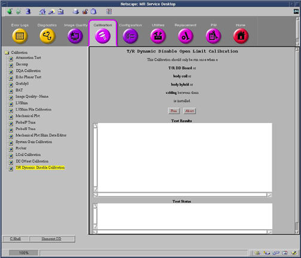

Operating Documentation
Direction 5133330-3, Rev# 14
Signa EXCITE HD 3.0T Service Methods
Module Version 3.0, Version Date 3/18/10
Operating Documentation |
| Required Persons | Preliminary Reqs | Procedure | Finalization |
|---|---|---|---|
| 1 | Not Applicable | 3 mins | Not Applicable |
This calibration should be run on:
System installation.
T/R DD Board replacement.
Body Coil replacement.
Body Hybrid replacement.
Replacement of cabling between any of the above.
| Condition | Reference | Effectivity |
|---|---|---|
All cables and body coil connected | - | - |
From the Common Service Desktop, select [Calibration] > [T/R Dynamic Disable Calibration] > [Run] the calibration procedure.
Illustration 1: T/R Dynamic Disable Open Limit Calibration

The calibration will complete with results given in the Test Results text area.
Perform a TPS Reset for calibration changes to take effect.
No finalization steps.